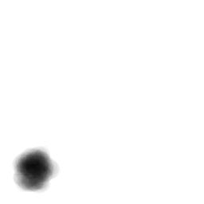
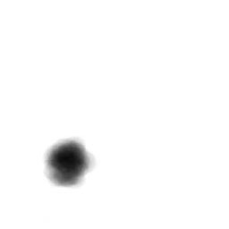
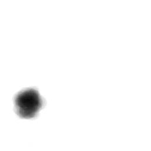
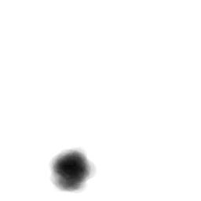
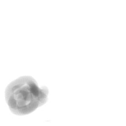
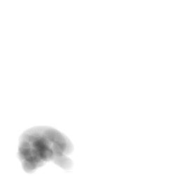
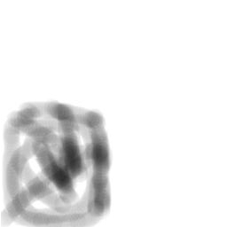
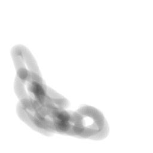
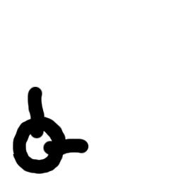

BackPropagáció Javában
Képfeldolgozás
|  |
 |
|  |
 |
|  |
 |
|
 |
|  |
 |
- 256x256 méretû képek, jellemzõen egyik sarokban sötét folt
- a feladat a sarok megtanulása és megadása
- CornerLearning.java
- CornerTesting.java
- 100 példa,
6 perc tanulás után a hiba 10 a -5-en
- a hálózat
- eredmények:
output - ul:-0.9999654247133428, ur:-0.9993022974027022,ll:0.9998592802048032,lr:-0.9679824598074586
output - ul:-0.9999486108550013, ur:-0.9997663629641741,ll:-0.999956824657347,lr:0.9999982890882304
- túl nagy háló, emiatt lassú a Java kód
- valódi képek feldolgozására, ennél ügyesebb megoldás kell